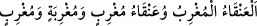

“__WORD__ ismi bilinen fakat varlığı olmayan bir kuştur ya da
uzak yerlere uçabilen büyük bir kuşun adıdır. Veya hiç bir mânâ ifâde etmeyen
lafızlardandır. Nitekim el-Kâmûs’ta böyle geçmektedir. Daha önce geçtiği üzere onu
kuyuya kapattılar. Hanzala’nın uzun bir müddet sonra kuyunun içinde bulunduğunda
elinin başındaki yaranın üzerinde olduğu, eli kaldırılınca kanının aktığı, eli serbest
bırakılınca derhal yaranın üzerine döndüğü söylenir.
Ress halkının kadınları lezbiyen bir kavim olduğu söylenir. İblîsin kızı Dilhât onların
yanına geldi ve kadınlarla ilişkide bulunup onlara bunu öğretti. Allah da onlara gecenin
başlangıcında bir yıldırımı musallat etti, gecenin sonunda yerle bir oldular. Güneşin
doğmasıyla birlikte bir ses koptu ve onların hepsi öldüler.
Bir rivâyete göre “Erkeklerin erkeklerle, kadınların da kadınlarla yetinmesi/ilişkiye
girmesi kıyâmet alâmetlerindendir.”[217] İşte sevicilik budur. Merfû bir hadîste:
“Kadınların sevicilik yapması onların zinasıdır.”[218] buyrulmuştur.
Denilir ki Ress halkı kendilerine gönderilen bir peygamberi yalanlayan ve onu içi dar
bir kuyuya hapseden bir topluluktu. Kuyunun ağzına ancak kalabalık bir grubun
kaldırabileceği büyük bir kaya koydular. O peygambere içlerinden sadece zenci bir köle
îman etmişti. Köle dağa gider, odun toplar ve sırtında taşırdı. Sırtındaki yükü satıp
parasıyla yiyecek satın alır, sonra kuyunun başına gelip kayanın kenarlarından
peygambere yiyecek atardı. Yıllar böylece akıp geçti. Sonra Allah Teâlâ o kavmi helâk
etti. Allah bir melek gönderdi ve taşı kaldırıp peygamberi kuyudan çıkardı. Siyah
kölenin kayayı kaldırdığı da söylenmiştir. Allah ona kayayı kaldırma gücü verdi. Köle
bir ip sarkıtıp peygamberi kuyudan çıkardı. Allah peygambere o kişinin cennette refîki
olduğunu vahyetti. Bir hadîste “İnsanlardan cennete ilk giren kimse siyah bir
köledir.”[219] buyrulmuştur. Hadîste kasdedilen bu köledir.
Ali bin Hüseyin b. Zeynelâbidîn babasından şöyle rivâyet eder: “Benî Temîm
kabilesinden bir adam mü’minlerin emîri Ali’nin (r.a.) huzûruna geldi ve şunları sordu:
“Ey mü’minlerin emîri, bize Ress ashabından haber ver; onlar hangi kavimdendiler,
hangi asırda ve bölgede yaşadılar? Onların meskenleri nerededir? Padişahları kimdir?
Allah Teâlâ onlara peygamber gönderdi mi, göndermedi mi? Onları neyle helâk etti? Biz
Kur’an’da onların bahsini okuyoruz, ama Ashâb-ı Ress topluluğuna dâir ne bir hikâye
anlatılmış ne de durumlarıyla ilgili bilgi verilmiş.”
Mü’minlerin emîri Hz. Ali (r.a.) şöyle cevap verdi: “Ey Temimli kardeş! Öyle bir
soru sordun ki senden önce kimse bana böyle bir soru sormadı. Benden sonra onların
hikâyesini kimseden işitemezsin. Onlar İsrâiloğulları arasında yaşayan bir kavimdi.
Davud’un (a.s.) oğlu Süleyman’dan (a.s.) önce çamfıstığı ağacına taparlardı. Yâfes b.
Nuh’un dikmiş olduğu o ağaç, bilinen çeşmenin kenarındaydı ve o çeşmenin dışından
çıkan bir nehir, nehrin kenarında da on iki şehir vardı. Nehrin adı Ress’ti. Doğu
beldelerinde, devrinde o nehirden daha büyük ve heybetli bir nehir, şehirlerinden daha
mâmur bir şehir yoktu. Şehirlerin en büyüğüydü, adı İsfendâbâd’dı. Padişahları Nemrud